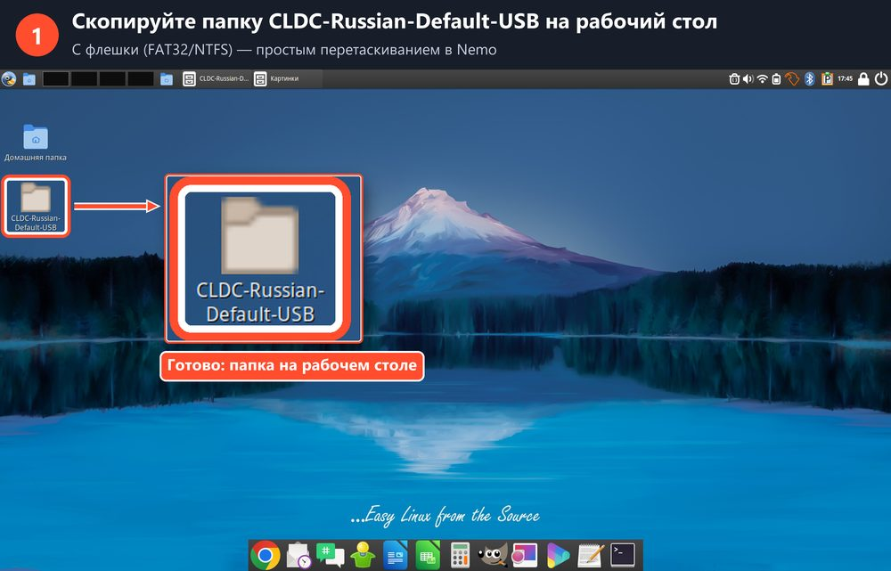
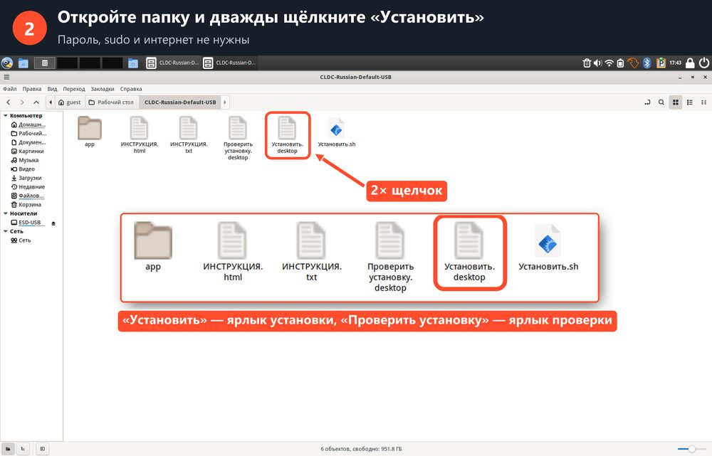
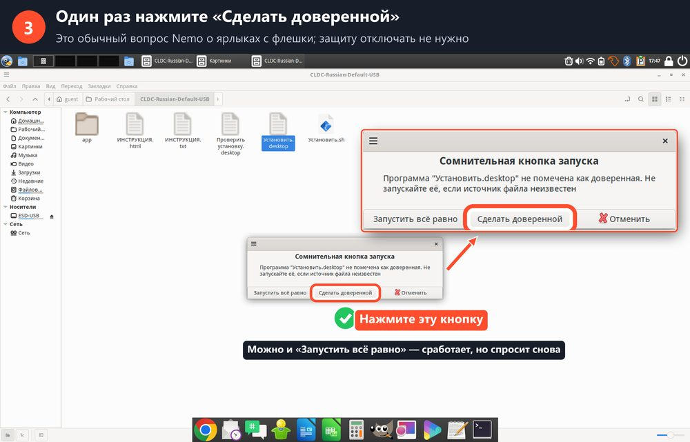
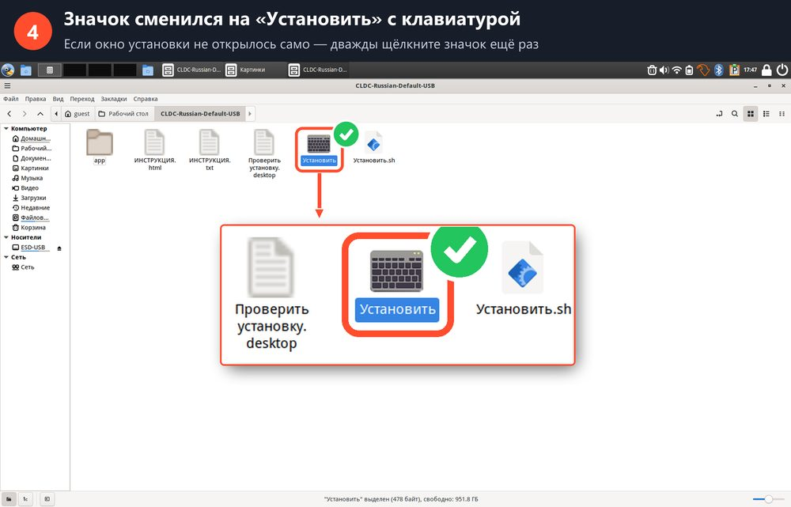
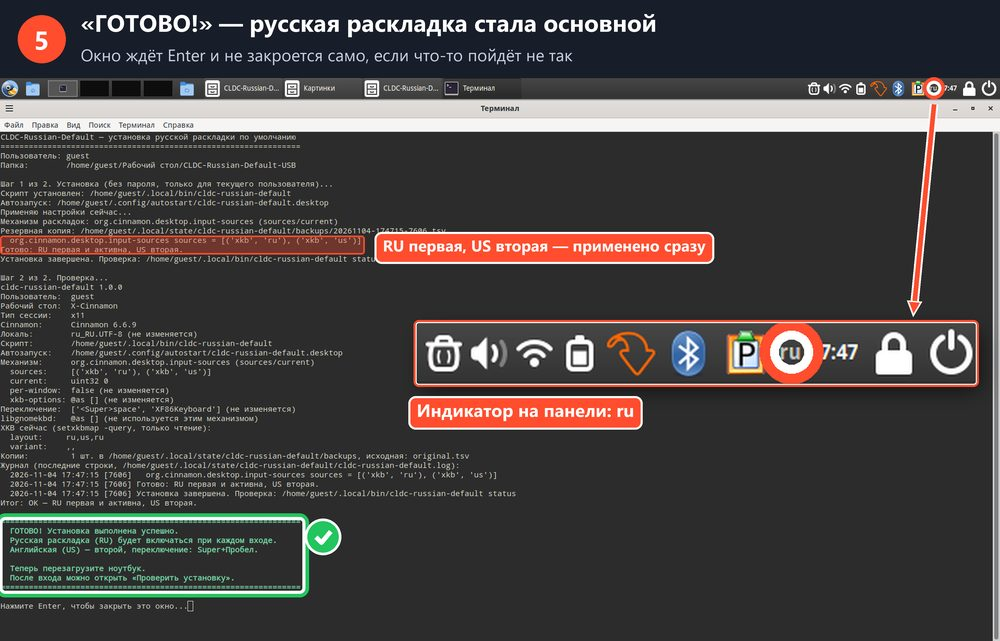
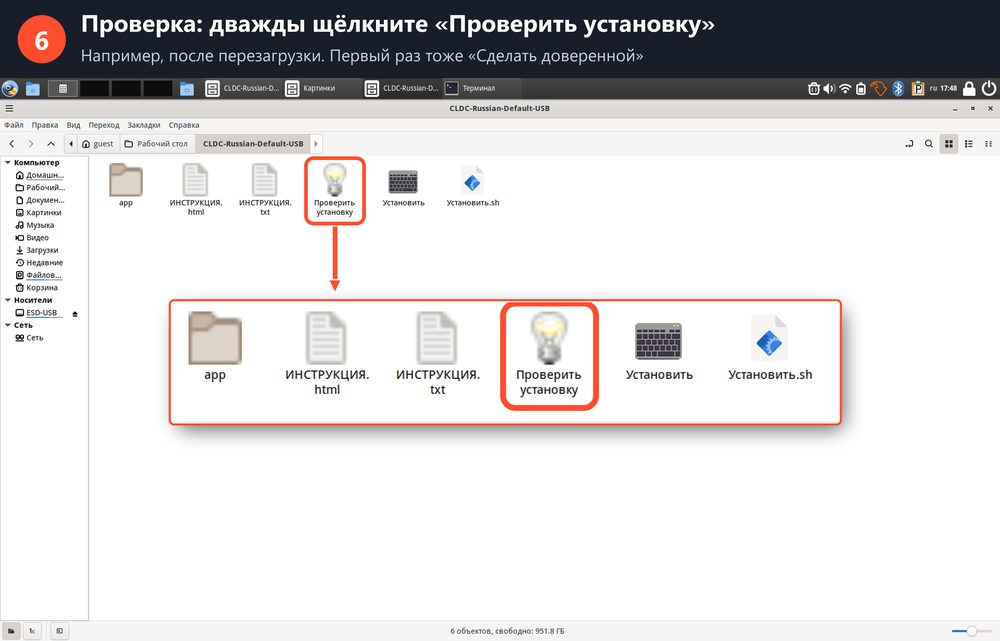
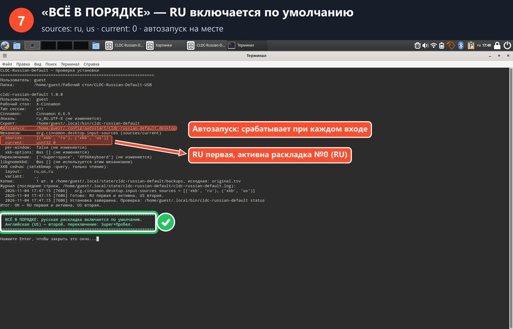

Русская раскладка по умолчанию
Calculate Linux Desktop Cinnamon и другие системы с рабочим столом Cinnamon. Около минуты на один компьютер.
- скопируйте папку на рабочий стол;
- дважды щёлкните «Установить»;
- нажмите «Сделать доверенной»;
- дождитесь «ГОТОВО!»;
- перезагрузите компьютер.
1Скопируйте папку на рабочий стол
Войдите в систему (обычно пользователем guest). Вставьте флешку, откройте её и перетащите папку CLDC-Russian-Default-USB на рабочий стол.

2Дважды щёлкните «Установить»
Откройте папку на рабочем столе и дважды щёлкните «Установить.desktop». Пароль, sudo и интернет не нужны.

3Нажмите «Сделать доверенной»
Появится окно «Сомнительная кнопка запуска». Это обычный вопрос о ярлыках с флешки. Нажмите «Сделать доверенной», это нужно сделать один раз.

4Значок сменится на клавиатуру
Ярлык станет называться «Установить» и получит значок клавиатуры. Если окно установки не открылось само, дважды щёлкните значок ещё раз.

5Дождитесь надписи «ГОТОВО!»
Зелёная рамка «ГОТОВО! Установка выполнена успешно» означает, что всё хорошо. На панели появится индикатор ru. Нажмите Enter, окно закроется.
Красная рамка «ОШИБКА»: окно не закроется само. Прочитайте причину и посмотрите таблицу ниже.

6Перезагрузите компьютер и откройте «Проверить установку»
Меню → Выход → Перезагрузить. Войдите тем же пользователем. Не переключая раскладку, откройте Chrome или LibreOffice и напечатайте что-нибудь: появятся русские буквы. Super + Пробел переключает на английский.
Для проверки дважды щёлкните «Проверить установку». В первый раз тоже нажмите «Сделать доверенной».

7«ВСЁ В ПОРЯДКЕ»
Если вы видите «ВСЁ В ПОРЯДКЕ: русская раскладка включается по умолчанию», компьютер готов. Переходите к следующему.

Если двойной щелчок не запускает установку
Например, открывается текст файла или ничего не происходит. Системную защиту отключать не нужно.
Способ А: разрешить запуск одного файла
- Правый щелчок по «Установить» → «Свойства».
- Вкладка «Права».
- Галочка «Разрешить выполнение файла как программы».
- Закройте окно и снова дважды щёлкните «Установить».
Способ Б: через терминал (работает всегда)
- Откройте папку CLDC-Russian-Default-USB на рабочем столе.
- Правый щелчок по пустому месту → «Открыть в терминале».
- Напечатайте латиницей и нажмите Enter:
bash app/usb-launcher.sh installПроверка:
bash app/usb-launcher.sh check
Если что-то не так
| «запущено от имени root» | Выйдите и войдите обычным пользователем (например, guest), запустите снова. |
| «не найден файл программы» | Папка скопирована не полностью. Скопируйте всю папку вместе с папкой app. |
| «ключ … недоступен для записи» | Настройку заблокировал администратор. Обратитесь к администратору. |
| После перезагрузки «Проверить установку» пишет «НЕ УСТАНОВЛЕНО» | Профиль пользователя очищается при каждом выходе, и установка в профиль не сохраняется. Обратитесь к администратору. |
| Где отчёт последнего запуска | ~/.local/state/cldc-russian-default/, файлы usb-install-report.txt и usb-check-report.txt. |
Как удалить и вернуть всё как было
В терминале:
~/.local/bin/cldc-russian-default uninstall --restore
Не открывайте и не сохраняйте файлы из этой папки в Блокноте Windows: это может испортить их для Linux.
Проект CLDC-Russian-Default, лицензия MIT.